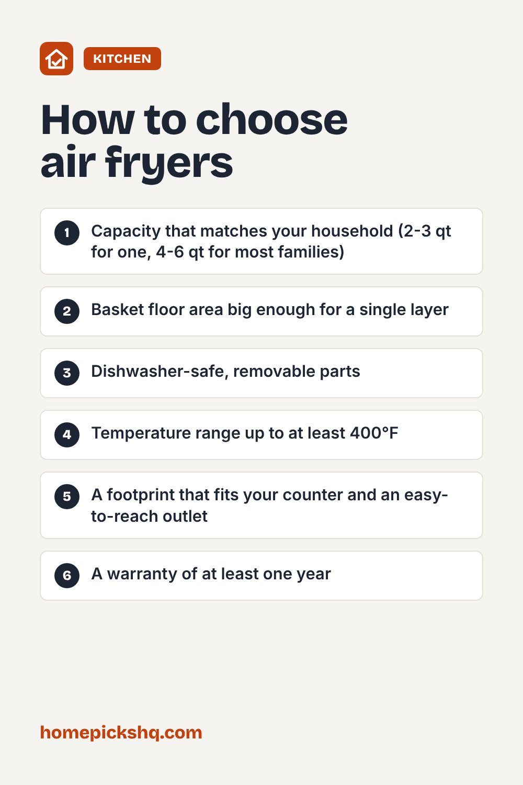

Best Air Fryers: How to Choose the Right One

How we write these guides: we research manufacturer specifications, expert guidance, and owner feedback. We do not claim to have lab-tested every product. Links to Amazon on this page are affiliate links; see our disclosure.
An air fryer is a compact convection oven with a powerful fan. It circulates hot air around food so the outside crisps with little or no oil. They are popular because they preheat fast and cook frozen foods, wings, and vegetables quickly. The catch is that sizes, shapes, and features vary a lot, so the right pick depends on how many people you cook for and how much counter space you have.
Start with capacity
Air fryer capacity is listed in quarts. A 2 to 3 quart model suits one person or a small kitchen. A 4 to 6 quart model is the sweet spot for most couples and small families. If you regularly cook for four or more, look at 6 to 8 quarts or an oven-style unit with racks.
Bigger is not always better. A large basket on a small household wastes counter space and takes longer to heat. Food also crisps best in a single layer, so basket floor area matters more than the headline quart number.
Basket style or oven style
Basket models are the classic design: a drawer you pull out and shake. They are compact and usually easiest to clean. Oven-style air fryers look like toaster ovens, with racks and a door. They hold more food at once and can often bake, toast, and roast, but they take up more room.
Dual-basket models let you cook two foods at different settings at the same time. They are handy for a protein and a side, though each basket is smaller.
Wattage, controls, and noise
Most air fryers run between about 1,400 and 1,800 watts. Higher wattage generally means faster preheating and recovery, but it also means more heat and fan noise. Check that your kitchen outlet is a standard 15 amp circuit and avoid running the unit on a shared extension cord.
Digital controls with preset programs are convenient, while simple dials are durable and easy to read. Look for a temperature range that reaches at least 400°F and a clear timer with an automatic shutoff.
Cleaning and coatings
Removable baskets and trays that are dishwasher safe save time. Most baskets have a nonstick coating, so avoid metal utensils and abrasive pads. If the coating starts to flake, stop using that part and replace it.
Wipe the inside of the cooking chamber after greasy meals. Built-up grease can smoke the next time you cook.
Common mistakes
Overcrowding is the top mistake. Hot air needs space to move, so cook in batches. Shaking the basket halfway through helps even browning. Pat food dry before cooking, and use a light spray or brush of oil for breaded or fresh foods.
If you use parchment or foil, make sure it is perforated or weighed down by food, because loose sheets can lift into the heating element.
Quick buying checklist
- Capacity that matches your household (2-3 qt for one, 4-6 qt for most families)
- Basket floor area big enough for a single layer
- Dishwasher-safe, removable parts
- Temperature range up to at least 400°F
- A footprint that fits your counter and an easy-to-reach outlet
- A warranty of at least one year
See air fryers on AmazonUse the checklist above to compare options. As an Amazon Associate I earn from qualifying purchases.

Frequently asked questions
Do air fryers need oil?
Not always. Frozen foods usually need none. Fresh vegetables, breaded items, and lean meats crisp better with a teaspoon or two of oil.
Is it safe to cook raw chicken in an air fryer?
Yes, as long as it reaches an internal temperature of 165°F, which the USDA recommends for poultry. Use a food thermometer to check.
Can an air fryer replace my oven?
For small and medium meals, often yes. For large roasts or multiple trays, a full oven is still better.